|
|
| sea slugs text index | photo index |
| Phylum Mollusca > Class Gastropoda > sea slugs > Family Onchidiidae |
| Big
pimply onch slug awaiting identification* Family Onchidiidae updated Jun 2020
Where seen? This medium to large onch slug is commonly seen, sometimes in large numbers, on many of our natural rocky shores. Usually on large rocks and boulders, also on small stones on rocky shores, sometimes also on sea walls. The slug is often covered with sand (so they probably burrow into sand to hide?). These slugs are usually well hidden on a warm and sunny day. But on cool days or early in the morning or at dusk, you might see lots of them crawling about. They can move quite fast! |
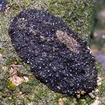 Changi, Dec 10 |
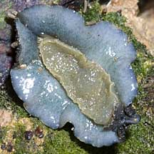 |
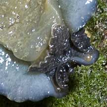 |
| Features: 4-5cm. Body hard, broad
and rather flat, sometimes with a raised hump along the centre of
the body. Skin with many irregular bumps and pimples. Generally beige,
brown to grey. Sometimes with spots in darker shades. The eyes are
held on short stalks that stick out from under the tough pimply body.
Most other snails have eyes at the base of tentacles.
The underside of the body may have a bluish or greenish tinge, the
narrower foot is beige. Slippery slug: Avoid touching it as it is very slimy and if you try to pick it up, it generally slips out of your hands to bounce away among the rocks. The poor slug might get hurt and it may not be able to climb back up to where it can find food and safety. |
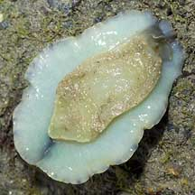 On the underside, a broad foot. Raffles Lighthouse, Jul 06 |
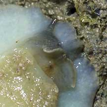 One pair of eyes on stalks. The mouth is on the underside. Raffles Lighthouse, Jul 06 |
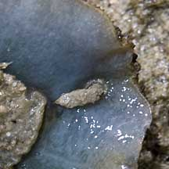 Pooping from the other end. Tanah Merah, Dec 10 |
| What does it eat? Like other onchs, it grazes on algae growing on the rocks. As it feeds, it often leaves a bare patch on the rock and a trail of 'processed algae' behind. |
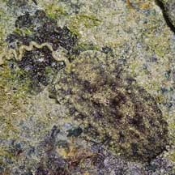 Raffles Lighthouse, Jul 06 |
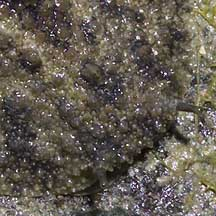 A pair of tentacles. |
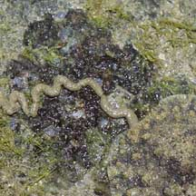 Leaving behind a grazed patch, and a trail of 'processed algae'. |
 |
*Species are difficult to positively identify without close examination.
On this website, they are grouped by external features for convenience of display.
| Big pimply onch slugs on Singapore shores |
On wildsingapore
flickr
|
| Other sightings on Singapore shores |
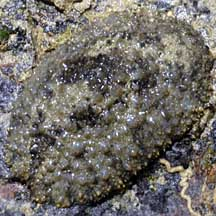 Pulau Pawai, Dec 09 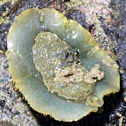 |
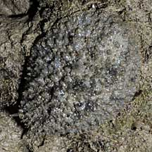 Pulau Sudong, Dec 09 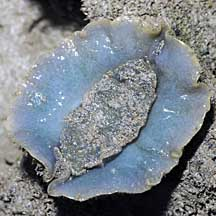 |
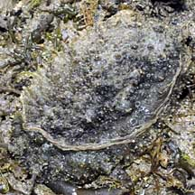 Terumbu Berkas, Jan 10 |
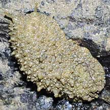 Pulau Senang, Jun 10 |
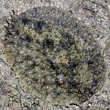 Pulau Salu, Aug 10 |